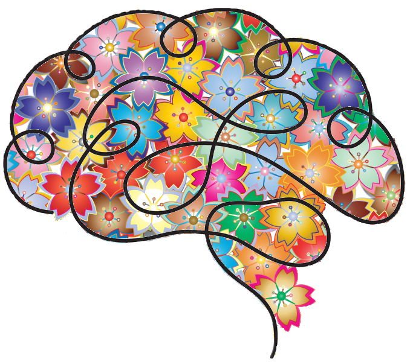

Neuropsychologie
La neuropsychologie est la branche de la psychologie qui s’intéresse à l’étude des relations entre le système nerveux et le comportement. Ainsi, cette branche est centrée sur le comportement normal et anormal, ce qui permet de comprendre la raison de plusieurs troubles neurologiques. C’est pour cela qu’en neuropsychologie, le rôle des parties du système nerveux joue un rôle très important, car chacun a un but dans la vie quotidienne d’un être humain.
Troubles
Il existe trois types de troubles neurologiques qui sont étudiés dans la neuropsychologie. Tout d’abord, les troubles neurologiques développementaux sont des troubles apparaissant généralement à un jeune âge à la suite d’un développement cérébral anormal. Énormément de troubles biens connus sont dans cette catégorie, comme le trouble de l’attention avec hyperactivité (TDAH), la dyslexie, la dysgraphie, la dyscalculie, la dyslalie ou même les troubles du spectre autistique (TSA). Ensuite, les troubles neurologiques acquis surviennent à la suite d’un évènement, comme un accident, qui vient abîmer la structure du système nerveux. L’accident vasculaire cérébral (AVC) ou le traumatisme crânien en sont de bons exemples. Enfin, les troubles neurologiques dégénératifs sont des troubles qui détériorent progressivement les structures cérébrales, ce qui entraîne une altération de leurs fonctions. Par exemple, lorsque la maladie d’Alzheimer apparait chez un individu, elle s’intensifie petit à petit. Tous ces troubles ont de lourdes conséquences sur la cognition, le comportement, la personnalité et les émotions d’un être humain.
Spécialistes
Dans cette spécialité, c’est le neuropsychologue qui évalue le trouble neurologique atteint par un patient. En effet, il établit des liens entre son diagnostic, l’expérience personnelle du patient et ses connaissances afin de les associer aux fonctions cérébrales.
Études
Pour devenir neuropsychologue au Québec, il faut avoir un diplôme d’étude collégiales en sciences lettres et arts ou en science de la nature avec les compétences de biologie et de chimie. Ainsi, il sera possible de faire un doctorat en médecine. Avec ce doctorat, il est possible d’être admis au programme de maîtrise en neuroscience, ce qui permettra de développer ses connaissances basiques et d’effectuer un travail de recherche afin de s’initier au champ d’étude de la neuropsychologie.
